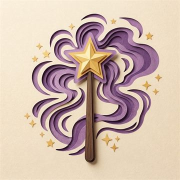

Geminio
Görseli kâğıda kopyalama büyüsü

Görseli kâğıda kopyalama büyüsü
Kareler görselle birlikte büyür, döner, kayar. Oranı tutturmaya ve parçaları hizalamaya yarar. İstersen kâğıda da aynı ızgarayı hafifçe çiz.
Ekrandan büyük bir çizim için görsel parçalara bölünür. Parçalar birbirinin üstüne %12 taşar: yeni parçaya geçince taşan kısmı, az önce çizdiğin çizgilerin üstüne oturtarak hizalarsın — cetvel gerekmez. Parçaları geçerken boyut değişmez, yalnızca görsel ortaya gelir. Kesikli çizgi parçanın asıl sınırıdır.